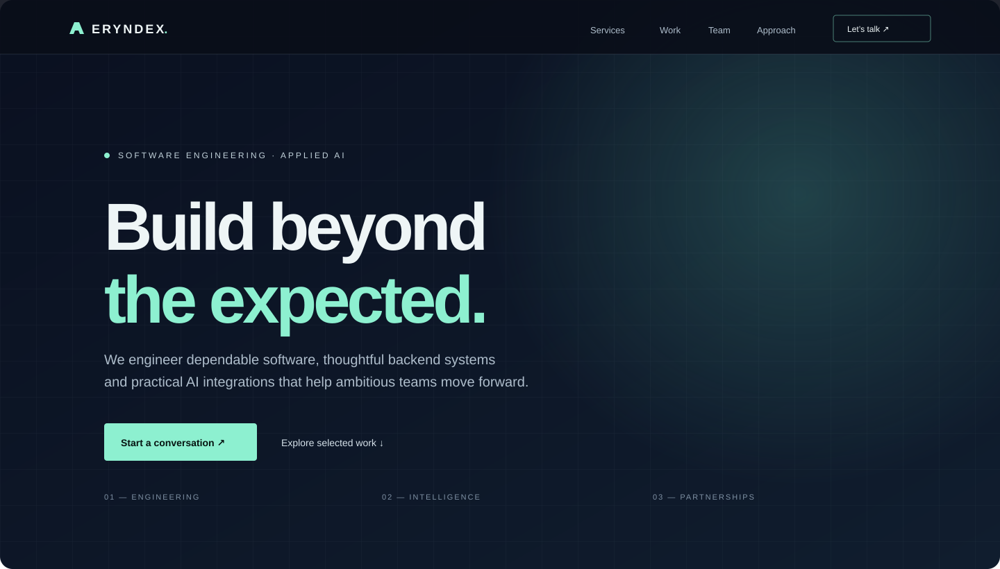

ERYNDEX
Company Website.
A responsive digital presence for a B2B software engineering and applied AI company. Designed to communicate capabilities with clarity, establish trust through transparent project evidence, introduce the founding team and make the first client conversation straightforward.

Visual concept preview created for this case study; it is an illustration, not a screenshot captured from the deployed website.
Make the company
understandable at a glance.
The goal was to create a credible first touchpoint for international business buyers, software agencies and product teams evaluating a potential engineering partner. The site needed to explain what ERYNDEX does, show the work behind its claims, identify who owns business and technical responsibilities, and provide a direct route to start a conversation.
Audience
International SMEs, SaaS teams, digital product companies and software agencies exploring delivery partnerships.
Primary action
Start a project or partnership conversation through the contact section.
Brand direction
Enterprise-oriented, restrained, modern and technology-focused rather than playful or template-like.
Content principle
Describe demonstrated capabilities and explicitly distinguish portfolio demonstrators from verified production deployments.
A deliberate path
from interest to contact.
The page uses a single-page narrative with persistent navigation. Visitors first understand the company’s positioning, then review its service areas, inspect concrete project examples, learn how responsibilities are divided, and finally reach the contact call to action.
- Hero and concise value proposition
- Company introduction and positioning
- Backend/API, applied AI, knowledge retrieval and integration services
- Three engineering demonstrators linked to their source repositories
- Founding team roles and approved profile information
- Four-step engagement process: Understand, Scope, Build and Handover
- Contact section and responsive footer
Dark, precise and
confident by design.
Color
Deep navy surfaces provide contrast; mint is reserved for emphasis and interaction; muted blue-gray supports secondary information.
Typography
Space Grotesk establishes the editorial display hierarchy while DM Sans supports readable body copy and navigation.
Layout
Wide editorial sections, generous spacing, fine borders and restrained card surfaces create a consistent visual rhythm.
Motion
Subtle hover elevation, scroll progress and a compact mobile navigation add feedback without dominating content.
Design tokens are centralized in CSS custom properties to keep colors, surfaces, typography and borders consistent and easy to revise.
Lightweight by choice.
Easy to maintain.
The company site is implemented as a static front end with no build tool or framework dependency. This keeps the initial hosting model simple and allows the page to be published from a GitHub Pages repository path.
- HTML: semantic page sections, navigation, service and project content, team cards and contact links.
- CSS: design tokens, responsive breakpoints, reusable components, grid and flex layouts, hover states and reduced-motion handling.
- JavaScript: mobile menu open/close behavior, accessible expanded state, active scroll progress and dynamic footer year.
- Assets: remote font loading with system fallbacks; CSS-drawn decorative artwork avoids large image dependencies.
- Publishing: static files hosted from the existing GitHub Pages portfolio repository.
Built for different
screens and inputs.
- Responsive layouts adapt the navigation, hero, content grids and team cards for smaller screens.
- Navigation toggle exposes its expanded state with
aria-expanded. - Semantic landmarks and heading structure support assistive technology and document navigation.
- Visible link labels and clear contrast hierarchy help users identify actions.
- Reduced-motion preferences are respected for scrolling and transitions.
Show the work.
Don’t overstate it.
The website links to three separate portfolio demonstrators: FarsiPulse, AtlasRAG and RelayForge. Their project pages describe the architecture and implementation scope, while preserving known limitations such as retrieval-only behavior in AtlasRAG and in-memory storage in RelayForge.
Team information is limited to roles and profile details available for publication. Additional biographies, credentials, client logos, testimonials, case-study metrics and legal claims are intentionally excluded until verified and approved.
Readable project
structure.
The company website and its portfolio case study are kept in separate directories so the public company page can evolve without losing the engineering documentation.
What should happen
before public launch.
- Replace the placeholder contact email with a verified company mailbox.
- Confirm team biographies and obtain approval for names, photos and external profile links.
- Connect a verified company domain when available.
- Test all links, mobile navigation, keyboard access and major browsers.
- Run Lighthouse and accessibility checks; fix issues before publishing performance or compliance claims.
- Add real project screenshots only after capturing the actual running site or approved product screens.
- Configure analytics and privacy notices only if analytics or tracking are introduced.